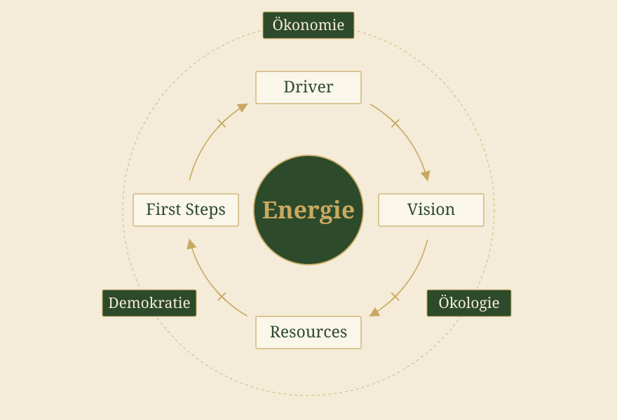
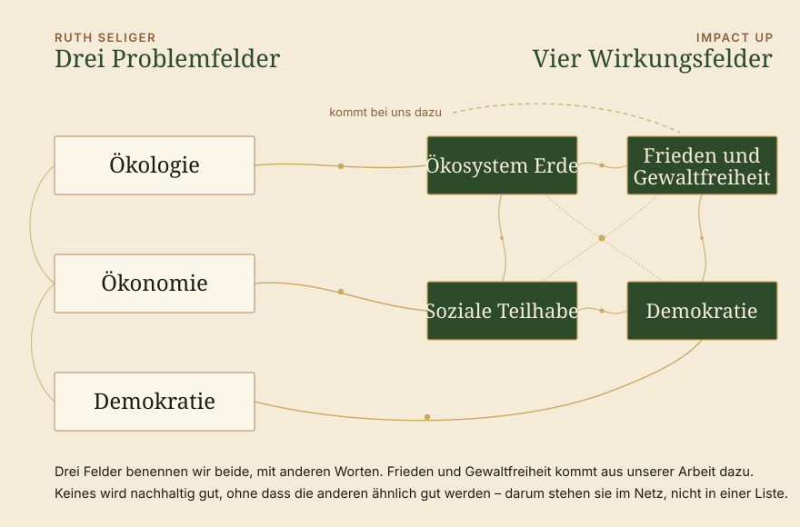
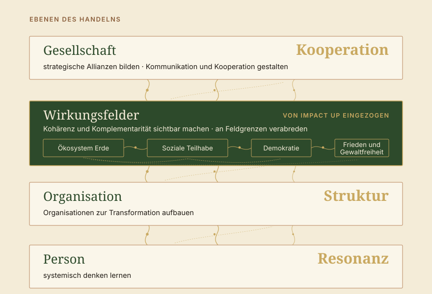

Impuls · Wie werden wir wirklich wirksam
Das Buch Systemische Beratung der Gesellschaft. Strategien für die Transformation von Ruth Seliger hat uns inspiriert. Ruth Seliger kommt aus der systemischen Organisationsentwicklung und will die Gesellschaft verbessern. Das ist ein wichtiger Ansatz unseres Instituts: Dort, wo Wirkung erreicht werden soll, soll auch Gesellschaft verbessert werden. Und genau wie Seliger wollen wir dabei systemisch mit der Gesellschaft arbeiten. Ein Check, wie die Ideen von Seliger mit unseren zusammenpassen: der systemische Ansatz der Beratung von Impact Up auf dem Prüfstand.

Wie das Buch gebaut ist
Erst die Brille, dann der Prozess.
Wie kommt man von der Analyse der Gesellschaft zu einer Strategie? Und wie werden wir wirklich wirksam? Als systemische Organisationsentwicklerin aus Wien wendet Ruth Seliger ihre Beratungserfahrung auf die Gesellschaft an. Spannend zu lesen, denn sie kommt auf viele ähnliche Gedanken, wie wir sie hier verfolgen. Einige Gedanken, einige Ideen und natürlich auch einige Parallelen zu Impact Up findet ihr hier.
Ruth Seliger ist systemische Beraterin, und das Buch beginnt dort, wo sie herkommt. Rund fünfzig Seiten lang legt sie die Grundlage: Modelle der Veränderung – das technische, das dialektische, das systemische Konzept. Dann die Kontextklärung mit der Frage, ob sich Gesellschaft als Kundensystem lesen lässt. Dann Problembeschreibung und Auftragsklärung, also das, was am Anfang jeder Beratung steht. Darin liegt die eigentliche Übersetzungsleistung des Buchs: Handwerk, das in systemischer Beratung längst sitzt, wird auf eine Ebene gehoben, auf der niemand einen Auftrag erteilt.
Eine Beobachtung trägt diesen Vorbau. Gesellschaft lässt sich beobachten – und wer sie beobachtet, bleibt Teil von ihr. Es gibt keinen Punkt außerhalb, von dem aus die Lage neutral zu betrachten wäre. Wer damit arbeitet, arbeitet an einem System, in dem er selbst vorkommt.
Am Ende dieses Vorbaus steht der Strategiekompass mit der Change-Formel, und erst danach beginnt der Hauptteil: der Strategieprozess entlang Driver, Vision, Ressourcen und ersten Schritten. Dort, beim Driver, liegt auch die Bestandsaufnahme der Lage – Ökonomie, Ökologie, Demokratie. Sie ist ungeschönt. Hier läuft eine Gesellschaft in schwierige Zeiten, und niemand tut so, als ließe sich das mit gutem Willen abbiegen. Das ist Realismus, und genau deshalb trägt, was daraus folgt.
Am Ende steht, wie es im Klappentext heißt, ein Instrumentarium für Transformation: „eine Schatzkiste an systemischer Theorie, Modellen, Konzepten und Instrumenten zur Gestaltung von Strategien für den Weg von der Analyse zur Vision" (Ruth Simsa, Wien).


Kokreation von Energie
Gesellschaft hat keine Geschäftsführung.
Dass Gesellschaft keine Geschäftsführung hat, ist gut und gehört zu einer Demokratie dazu, aber es macht eben einige Dinge herausfordernd, insbesondere wenn man durch die Brille der Organisationsentwicklung schaut. Wer schon einmal versucht hat, ein Thema „in die Gesellschaft zu bringen", kennt das Gefühl dahinter – man schreibt, man vernetzt, man argumentiert und greift doch ins Leere, weil es keine Stelle gibt, die dafür zuständig wäre. Es gibt kein Gegenüber, das einen Auftrag erteilt, und keines, das ihn ausführt.
Wenn es keine Zentrale gibt, zählt, was zwischen den Beteiligten entsteht. Deshalb stehen bei Seliger als zentrale Strategien für die gesellschaftliche Ebene die Allianzen, gesellschaftliche Kommunikation und Kooperation. Ein Kompass, der auf dem Weg unterstützt: erst die Driver, dann die Vision, dann die Ressourcen, dann die ersten Schritte. Was daraus entsteht, entsteht zwischen Menschen – und deshalb geht es hier um Energie.
Driver × Vision × Resources × First Steps = Energie

Seliger etabliert hier diese Change-Formel als Strategiekompass. Sie benennt die Elemente, die die Energie erzeugen – die Kraft, aus der Bewegung überhaupt entsteht. Das Entscheidende ist das Malzeichen: Die vier Elemente werden multipliziert. Fällt eines auf null, fällt die ganze Bewegung. Wer vergessen hat, wovon er ursprünglich weg wollte, kommt auch mit der besten Vision nicht weit. Wer die eigenen Ressourcen nicht mehr sieht, wird müde, so klar der nächste Schritt auch sein mag.
Entlang dieser vier Elemente läuft der ganze Hauptteil. „Warum?" Beim Driver steht die Dringlichkeit und mit ihr die Lage in Ökonomie, Ökologie und Demokratie. „Wohin?" Bei der Vision trennt Seliger sorgfältig: Utopien drücken die Sehnsucht aus, dürfen aber unerreichbar bleiben, Visionen entwerfen eine Zukunft, in die es tatsächlich gehen kann, und Ziele brechen sie auf Handhabbares herunter. „Womit?" Bei den Ressourcen geht es auf Schatzsuche – welche Ressourcen haben wir, worauf können wir aufbauen? „Wie?" Bei den ersten Schritten wird interveniert, auf drei Ebenen zugleich.
Am Ende dieser Rechnung steht Energie – die Transformationsenergie, die Veränderungsenergie. Und es ist spannend, dass hier eine Art von sozialer Energie gemeint sein muss: Energie, die zwischen Menschen entsteht. Sie hält Zusammenarbeit in Gang, und sie ist der Grund, warum Kooperation mehr braucht als einen guten Plan. In gesellschaftlicher Transformation kommt es weniger auf Pläne an, die stimmen, mehr auf Energie, die trägt.
Wo wir Impact Up wiederfinden
Drei Felder der Dringlichkeit, vier Felder der Wirkung

Unsere Wirkungsfelder sind unabhängig von diesem Buch entstanden, aus der Arbeit heraus, aus Menschen und Resonanz. Umso schöner, wie nah sie beieinanderliegen: Seligers Ökologie ist unser Ökosystem Erde, ihre Ökonomie liegt dicht an Sozialer Teilhabe, und bei Demokratie nutzen wir dasselbe Wort.
Sie stehen bei ihr als Problemfelder beim Driver, und das ist stimmig: Von dort kommt die Dringlichkeit. Wir nennen dieselben Felder Wirkungsfelder, weil wir sie als Ort brauchen, an dem Organisationen sich abstimmen. Zwei Blickrichtungen auf denselben Gegenstand – die eine fragt, wovon wir weg wollen, die andere, wo wir uns treffen.
Was bei uns dazukommt, ist Frieden und Gewaltfreiheit. Positiver Frieden meint mehr als die Abwesenheit von Krieg – Freiheit von Diskriminierung, von struktureller und kultureller Gewalt. Diese Logik reicht in die anderen Felder hinein und ist bei Seliger eng mit den Problemen der Demokratie verbunden. Sie mitzudenken hat für uns eigenes Gewicht, weil Menschen nur dort mitgehen, wo sie nicht übergangen werden, und weil hier so viel Methodik zur Kooperation und zum gegenseitigen Verständnis drinsteckt.
Unverändert sehen wir beide die enge Vernetzung und die zahlreichen Zusammenhangsbehauptungen der Felder: Keines dieser Felder wird nachhaltig gut, ohne dass die anderen ähnlich gut sind. Wer beispielsweise den Klimawandel reduzieren will, muss Klimagerechtigkeit, also die soziale Teilhabe, mitdenken. Ökonomische Teilhabe geht nicht ernsthaft ohne Demokratie, sonst ist es Fürsorge statt Beteiligung. Deshalb stehen die Felder bei uns beiden im Netz und nicht in einer Liste.
Wo wir etwas hinzufügen
Zwischen Organisation und Gesellschaft.
Bei den ersten Schritten unterscheidet Seliger drei Ebenen des Handelns. Auf der Ebene der Person: systemisch denken lernen. Auf der Ebene der Organisation: gesellschaftliche Transformation organisieren. Auf der Ebene der Gesellschaft: strategische Allianzen bilden, Kommunikation und Kooperation gestalten. Dass die Kooperation dort ganz am Ende steht, hat uns gefreut – bei uns steht sie an derselben Stelle. Kooperation ist zentral für unsere Gesellschaft, Kooperation ist der zentrale Transformationsbegriff. Wir gehen über Perspektiven an dieselben Begriffe heran und suchen zunächst in der Reflexion die Resonanzen, Strukturen und Kooperationen zur Wirkung.
Die Organisation liegt dabei zwischen Person und Gesellschaft. Sie ist für Seliger der zentrale Ort, an dem sich Transformation organisieren lässt. Die Systemlogik von Organisationen ist, „dass die Kommunikation in einer Gesellschaft geordnet – organisiert – gestaltet werden kann. Sie dienen dazu, funktionale Teilsysteme der Gesellschaft zu strukturieren." Die Strukturen in den Organisationen sind für uns die zentrale Möglichkeit, die Wirkung nach außen zu gestalten.

Unsere vier Perspektiven auf Wirkung: Person mit Resonanz, Organisation mit Struktur, dazwischen eingezogen die vernetzten Wirkungsfelder, oben Gesellschaft mit Kooperation.
Zwischen der einzelnen Organisation und der Gesellschaft als Ganzem sind Wirkungsfelder eine weitere Arbeitsebene, weil es auf dieser Ebene, wie wir glauben, eine gewisse Kohärenz und Komplementarität zwischen den unterschiedlichen Wirkungen braucht. Diese Arbeitsebene ist für uns die Ebene, auf der Wirkungen als Erstes im Außen ankommen und Anschlussfähigkeit nötig ist. Was für Seliger funktionale Teilsysteme der Gesellschaft sind, nennen wir Felder – denn Felder können wir auf der Arbeitsebene kontextspezifisch setzen und als ersten Schritt auf dem Weg in die Gesellschaft nutzen, um Wirkungen auf Kohärenz und Komplementarität zu prüfen.
Darum sprechen wir von Feldgrenzen statt von Systemgrenzen: An einem Feld kann man sich konkret verabreden. Es geht um Kohärenz und Komplementarität, also darum, ob die Wirkungen verschiedener Organisationen einander stützen oder aufheben. Die vier großen Felder sind dabei nur der Einstieg. Feiner werden sie von selbst, sobald man mit ihnen arbeitet: Stadtteilfelder, Themenfelder – genug Wohnraum für alle, gesunde Nahrung, ausreichend ärztliche Versorgung.
Was wir aus dem Buch mit in unsere Arbeit nehmen
Zwei Dinge, die bei uns weiterarbeiten.
Ressourcen zuerst sichtbar machen. Die vertraute Bewegung setzt am Defizit an – Problem analysieren, Ursachen aufschlüsseln, Maßnahmen ableiten. Das erzeugt saubere Anträge und erschöpfte Menschen, weil die Energie aus dem Mangel kommt. Die Frage, was schon da ist und wer schon daran arbeitet, dreht die Richtung um.
Auf die Energie schauen, nicht nur auf den Plan. Wenn eine Zusammenarbeit stockt, fehlt selten das Konzept. Meist stockt die Energie an fehlenden Ressourcen, Visionen, Drivern oder dem Wissen, wie man den nächsten Schritt macht. Ein guter ganzheitlicher Blick auf Probleme im Projekt.
Wir möchten euch das Buch empfehlen. Wenn ihr Gesellschaft verändern wollt, ist es in vielerlei Hinsicht hilfreich. Ihr findet viele Fragen und Methoden, wie ihr ansetzen könnt, um Elemente in der Gesellschaft zu transformieren. Selbstverständlich könnt ihr euch auch bei uns melden und die Dinge mit uns angehen: über Wirkungsfelder als Ort der Abstimmung, mit Begleitung im Prozess, mit Menschen, die an denselben Fragen sitzen. Was von der Lektüre am längsten bleibt, ist ohnehin weder Modell noch Formel, sondern eine Haltung: dass wir unsere Zukunft gestalten können, nicht wirklich steuern, aber zusammen anfangen und Dinge gestalten.
Ruth Seliger hat unter anderem zum Ende des Buches auch die Führung der Organisation besprochen, und wir sind hier schon sehr gespannt – Führung ist ihr langjähriges Feld, und ihr Dschungelbuch der Führung liegt hier schon bereit.
→ Systemische Wirkungsorientierung → Unsere Wirkungsfelder
Quellen
- Seliger, R.: Systemische Beratung der Gesellschaft. Strategien für die Transformation. Carl-Auer, Heidelberg, 1. Auflage 2022.
- Seliger, R.: Das Dschungelbuch der Führung. Ein Navigationssystem für Führungskräfte. Carl-Auer.
- Rosa, H.: Resonanz und soziale Energie. Über Schlüsselbegriffe der Kritischen Theorie. Hrsg. von Michael Kühnlein. Reclam, Ditzingen, 2026.Zwei Essays, in denen Rosa die soziale Energie an seine Resonanztheorie anschließt.